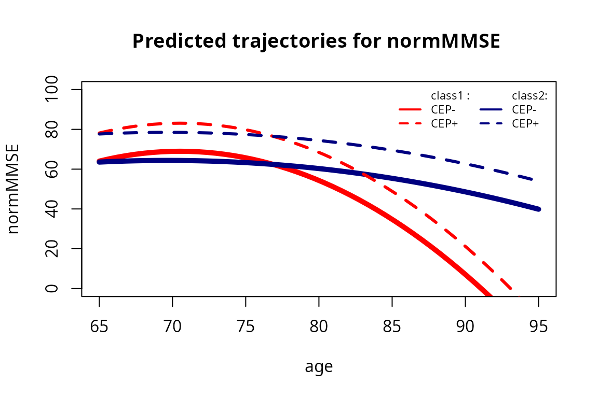
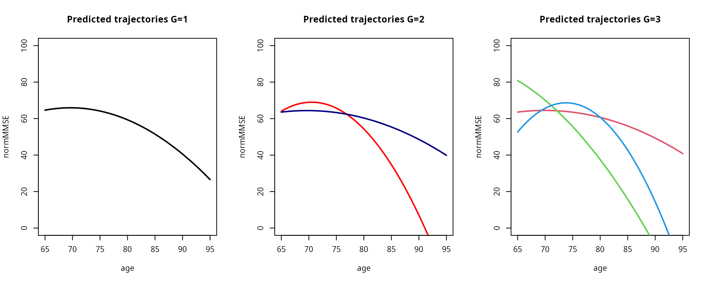

How to estimate a latent class mixed model using hlme function
Source:vignettes/latent_class_model_with_hlme.Rmd
latent_class_model_with_hlme.RmdBackground and definitions
The linear mixed model assumes that the population of N subjects is homogeneous and described at the population level by a unique profile \(X_{i}(t)\beta\). In contrast, the latent class mixed model consists in assuming that the population is heterogeneous and composed of \(G\) latent classes of subjects characterized by \(G\) mean profiles of trajectories.
The latent class mixed model
Latent class membership is defined by a discrete random variable \(c_{i}\) that equals \(g\) if subject \(i\) belongs to latent class \(g\) (\(g\) = 1, …,\(G\)). The variable \(c_{i}\) is latent; its probability is described using a multinomial logistic model according to covariates \(X_{ci}\):
\(\pi_{ig}= P(c_{i} = g|X_{ci}) = \frac{\exp(\xi_{0g}+X_{ci}\xi_{1g})}{ \sum_{l=1}^{G}\exp(\xi_{0l}+X_{ci}\xi_{1l})}\)
where \(\xi_{0g}\) is the intercept for class \(g\) and \(\xi_{1g}\) is the q1-vector of class-specific parameters associated with the q1-vector of time-independent covariates \(X_{ci}\). For identifiability, \(\xi_{0G} = 0\) and \(\xi_{1G} = 0\). When no covariate predicts the latent class membership, this model reduces to a class-specific probability.For a continuous and Gaussian variable, the trajectories of \(Y\) are defined conditionally to the latent class by a linear mixed model. So, conditional on class \(g\), the model is defined for subject \(i\) at occasion \(j\):
\[Y_{ij}|_{c_{i}=g} = X_{2ij}\beta+X_{3ij}\gamma_{g}+Z_{ij}b_{i}+\epsilon_{ij}\]
where \(X_{2ij}\), \(X_{3ij}\) and \(Z_{ij}\) are vectors of covariates respectively associated with common fixed effects over classes \(\beta\), class-specific fixed effects \(\gamma_{g}\) and with individual random effects \(b_{i}|_{ci=g}\) called \(b_{ig}\) whose distributions are now class-specific. \(X_{2}\) and \(X_{3}\) can’t have common variables.
Posterior classification
In models involving latent classes, a posterior classification of the subjects in each latent class can be made. It is based on the posterior calculation of the class-membership probabilities and is used to characterize the classification of the subjects as well as to evaluate the goodness-of-fit of the model (Proust-Lima et al. 2014 - https://doi.org/10.1177/0962280212445839 ).
Posterior class-membership probabilities are computed using the Bayes theorem as the probability of belonging to a latent class given the information collected. In a longitudinal model, they are defined for subject \(i\) and latent class \(g\) as:
\[\hat{\pi}_{ig}^Y=P(c_{i}=g|X_{i},Y_{i},\hat{\theta}_{G})\]
where : \(\hat{\theta}_{G}\) is the vector of parameters estimated in the \(G\) latent class model.
Example for Gaussian Data
In this example, we study the quadratic trajectory of a cognitive marker, the Mini Mental State Examination (MMSE) pre-normalized (to have a Gaussian distribution) in a sample of old people (aged 65 years old and over at inclusion) followed for up to 15 years with an adjustment on education level. The model does not consider interactions here although any regression may be considered.
Model considered
We consider the following latent class linear mixed model, where \(g\) denotes the class, \(i\) the subject and \(j\) the repeated measurement:
\[normMMSE_{ij}|_{c_{i}=g}=\beta_{0g}+\beta_{1g}age_{ij}+\beta_{2g}age_{ij}^2+\beta_{3}CEP_{i}+u_{0ig}+u_{1ig}age_{ij}+u_{2ig}age_{ij}^2+\epsilon_{ij}\]
Where : \(u_{ig} \sim \mathcal{N}(0,B_{g})\) and \(\epsilon_{ij} \sim \mathcal{N}(0,\sigma^2)\)
The Fixed part is \(\beta_{0g}+\beta_{1g}age_{ij}+\beta_{2g}age_{ij}^2+\beta_{3}CEP_{i}\) with a mixture on \(age_{ij}\) and \(age_{ij}^2\); the random part is \(u_{0ig}+u_{1ig}age_{ij}+u_{2ig}age_{ij}^2\),
Dependent variable: normalized MMSE
As MMSE has a very skewed distribution, we use its normalized version easily obtained from NormPsy package (see Introduction vignette).
Estimate the model with only one class (G=1)
Analysis is done according to age. To avoid any numerical problems, we recenter and scale age:
paquid$age65 <- (paquid$age - 65)/10
We fit the linear mixed model for normMMSE:
m1 <- hlme(normMMSE ~ age65+I(age65^2)+CEP,random =~ age65+I(age65^2), subject = 'ID', data = paquid) # ng=1 
Estimate the model with more than one class (G > 1)
From the model estimated by assuming a single latent class, we can now search for heterogeneous profiles. The next lines provide the estimation of the model for 2 latent classes using the automatic specification for the initial values when \(G>1\).
Be careful with initial values !
Initial values are specified in argument B. The option B=m1 automatically generates initial values from the maximum likelihood estimates of a 1-class model (here, m1). Not specifying B or specifying B=NULL is not recommended since it induces the internal pre-estimation of the model with \(G = 1\) (i.e m1) which may substantially increase computational time.
Values pre-specified by the user
In the following example, the initial values are pre-specified by the user: parameters of the variance covariance were taken at the estimated values of the linear mixed model and arbitrary initial values were tried for the class-specific trajectories:
Values randomly generated
An alternative is to randomly generate the initial values from the asymptotic distribution of the estimates of the 1-class model (here, m1):
Grid search
Finally, gridsearch function can be used to run an automatic grid search. In the next examples with \(G=2\) and \(G=3\) classes (m2d and m3b, respectively), hlme is run for a maximum of 30 iterations from 100 random vectors of initial values. The estimation procedure is then finalized only for the departure that provided the best log-likelihood after 30 iterations.
m2d <- gridsearch(hlme(normMMSE ~ age65+I(age65^2)+CEP, random =~ age65+I(age65^2), subject = 'ID', data=paquid, ng = 2, mixture=~age65+I(age65^2)), rep=100, maxiter=30, minit=m1)
m3g <- gridsearch(hlme(normMMSE ~ age65+I(age65^2)+CEP, random =~ age65+I(age65^2), subject = 'ID', data=paquid, ng = 3, mixture=~age65+I(age65^2)), rep=100, maxiter=30, minit=m1)This method is recommended as it enables to better explore the parameter space when the number of replicates is large enough and the number of iterations is fairly large.
Choose the best model
The estimation process of a set of models (usually with a varying number of latent classes) can be summarized with summarytable and plotted with summaryplot. Different information can be displayed:
summarytable(m1,m2,m2b,m2c, m2d , m3g, which = c("G", "loglik", "conv", "npm", "AIC", "BIC", "SABIC", "entropy","ICL", "%class"))
G loglik conv npm AIC BIC SABIC entropy ICL1 ICL2
m1 1 -8920.623 1 11 17863.25 17909.61 17874.69 1.0000000 17909.61 17909.61
m2 2 -8899.228 1 15 17828.46 17891.67 17844.06 0.5504369 18047.48 18050.54
m2b 2 -8899.228 1 15 17828.46 17891.67 17844.06 0.5504366 18047.48 18050.54
m2c 2 -8899.228 1 15 17828.46 17891.67 17844.06 0.5504369 18047.48 18050.54
m2d 2 -8899.228 1 15 17828.46 17891.67 17844.06 0.5504370 18047.48 18050.54
m3g 3 -8891.351 1 19 17820.70 17900.78 17840.47 0.6240325 18107.30 18089.55
%class1 %class2 %class3
m1 100.0
m2 12.4 87.6
m2b 87.6 12.4
m2c 12.4 87.6
m2d 12.4 87.6
m3g 85.8 4.0 10.2
summaryplot(m1, m2, m3g, which = c("BIC", "entropy","ICL"))
We summarize here the 6 models we previously estimated. We can see that all the 2-class models converged at the same estimation point. Only the order of the classes is changed. This phenomenon called “label switching” often happens. It is not a problem: this is the exact same optimum.
This example illustrates the complexity to define the “optimal number of latent classes”. Indeed, according to recommended BIC, the 2 class model should be retained (as it provides the lowest value). But both the AIC and Size adjusted BIC (which involve smaller penalties) favor the 3-class model. The entropy also favors the 3-class model as having a better discriminatory power (entropy closer to 1). Finally, the 3-class model creates a very very small class, which is usually not the kind of heterogeneity ones searches for and is interested in. In this example, depending on the statistical and clinical criteria, either the 2- or the 3-class model could be retained. Below, we retained the 2-class model for the final output description.
Description of the 2-class linear mixed model
Summary of the model
summary(m2d)
Heterogenous linear mixed model
fitted by maximum likelihood method
hlme(fixed = normMMSE ~ age65 + I(age65^2) + CEP, mixture = ~age65 +
I(age65^2), random = ~age65 + I(age65^2), subject = "ID",
ng = 2, data = paquid)
Statistical Model:
Dataset: paquid
Number of subjects: 500
Number of observations: 2214
Number of observations deleted: 36
Number of latent classes: 2
Number of parameters: 15
Iteration process:
Convergence criteria satisfied
Number of iterations: 1
Convergence criteria: parameters= 1.5e-10
: likelihood= 2e-11
: second derivatives= 1.9e-13
Goodness-of-fit statistics:
maximum log-likelihood: -8899.23
AIC: 17828.46
BIC: 17891.67
Maximum Likelihood Estimates:
Fixed effects in the class-membership model:
(the class of reference is the last class)
coef Se Wald p-value
intercept class1 -1.31806 0.23136 -5.697 0.00000
Fixed effects in the longitudinal model:
coef Se Wald p-value
intercept class1 64.03287 5.96887 10.728 0.00000
intercept class2 63.55487 2.34057 27.154 0.00000
age65 class1 17.97202 9.16299 1.961 0.04984
age65 class2 3.55149 3.20467 1.108 0.26777
I(age65^2) class1 -16.30143 2.63069 -6.197 0.00000
I(age65^2) class2 -3.81582 1.00282 -3.805 0.00014
CEP 14.11146 1.33668 10.557 0.00000
Variance-covariance matrix of the random-effects:
intercept age65 I(age65^2)
intercept 221.24245
age65 -228.32072 429.3370
I(age65^2) 62.02014 -121.0904 36.73242
coef Se
Residual standard error: 10.05486 0.20136Predictions of the trajectories
Class-specific predictions can be computed for any data contained in a dataframe as soon as all the covariates specified in the model are included in the dataframe. In the next lines, such a dataframe is created by generating a vector of \(age\) values between 65 and 95 and defining \(CEP\) at 1 or 0. The predictions are computed with predictY and plotted with the associated plot functionality or by using standard R tools.
data_pred0 <- data.frame(age=seq(65,95,length.out=50),CEP=0)
data_pred1 <- data.frame(age=seq(65,95,length.out=50),CEP=1)
data_pred0$age65 <- (data_pred0$age - 65)/10
data_pred1$age65 <- (data_pred1$age - 65)/10
Predictions are computed for each class at the point estimate:
pred0 <- predictY(m2d, data_pred0, var.time = "age")
pred1 <- predictY(m2d, data_pred1, var.time = "age")
Predictions can then be plotted:
plot(pred0, col=c("red","navy"), lty=1,lwd=5,ylab="normMMSE",legend=NULL, main="Predicted trajectories for normMMSE ",ylim=c(0,100))
plot(pred1, col=c("red","navy"), lty=2,lwd=3,legend=NULL,add=TRUE)
legend(x="topright",legend=c("class1 :","CEP-","CEP+","class2:","CEP-","CEP+"), col=c(rep("red",3),rep("navy",3)), lwd=2, lty=c(0,1,2,0,1,2), ncol=2, bty="n", cex = 0.7)
If we want to have a sense of the variability, we can compute the predictions with confidence intervals and plot them:
predIC0 <- predictY(m2d, data_pred0, var.time = "age",draws=TRUE)
predIC1 <- predictY(m2d, data_pred1, var.time = "age",draws=TRUE)
plot(predIC0, col=c("deeppink","deepskyblue"), lty=1, lwd=2, ylab="normMMSE", main="Predicted trajectories for normMMSE", ylim=c(0,100), shades=TRUE)
plot(predIC1, col=c("deeppink","deepskyblue"), lty=2, lwd=2, ylab="normMMSE", main="Predicted trajectories for normMMSE", legend=NULL, ylim=c(0,100), shades=TRUE, add=TRUE)
Finally, the predicted trajectories for 1-, 2- and 3-class models can be represented together in the following graph:
predG1 <- predictY(m1, data_pred0, var.time = "age")
predG3 <- predictY(m3g, data_pred0, var.time = "age")
par(mfrow=c(1,3))
plot(predG1, col=1, lty=1, lwd=2, ylab="normMMSE", legend=NULL, main="Predicted trajectories G=1",ylim=c(0,100))
plot(pred0, col=c("red","navy"), lty=1, lwd=2,ylab="normMMSE", legend=NULL, main="Predicted trajectories G=2", ylim=c(0,100))
plot(predG3, col=2:4, lty=1, lwd=2, ylab="normMMSE", legend=NULL, main="Predicted trajectories G=3", ylim=c(0,100))
Evaluation of the final latent class mixed model
Plot of the residuals
plot(m2d, cex.main=0.8)Graph of the predictions versus observations
In order to evaluate the fit of the selected model, we plot simultaneously the observations and the predicted values for each latent class.
plot(m2d, which="fit", var.time="age", marg=FALSE, shades = TRUE)The graph shows here the very good fit to the data.
Classification
The posterior classification of the model is obtained with:
postprob(m2d)
Posterior classification:
class1 class2
N 62.0 438.0
% 12.4 87.6
Posterior classification table:
--> mean of posterior probabilities in each class
prob1 prob2
class1 0.8054 0.1946
class2 0.1270 0.8730
Posterior probabilities above a threshold (%):
class1 class2
prob>0.7 61.29 90.18
prob>0.8 58.06 69.18
prob>0.9 43.55 47.95
Class 1 is composed of 62 subjects (12.4%), whereas 438 are in the second class.
We can also see information about the discrimination power of the model with:
the posterior classification table: subjects classified in
class 1(resp.class 2) have a mean probability of 0.8054 (resp. 0.8730) to belong to this class. This show good discrimination of the classes.- the proportion of classified subjects above a threshold: here 90.18% (resp. 61.29%) of subjects in class 1 (resp. 2) are classified in the class with a posterior probability greater than 70%.
Examples with other types of dependent variables
Latent class mixed models can be estimated for other types of data within lcmm R package:
with lcmm function for not necessarily Gaussian longitudinal marker
with multlcmm function for multiple longitudinal markers measuring the same underlying latent process
with Jointlcmm (or shortcut jlcmm) function for longitudinal markers measuring a unique longitudinal dimension and time to event (possibly with competing risks)
with mpjlcmm function for multivariate longitudinal dimensions (i.e., markers or processes measured by several markers) and time to event (possibly with competing risks)
with other functions to come … !
Each time, the same functions (e.g., summarytable, gridsearch, postprob, predictY) apply exactly in the same way.